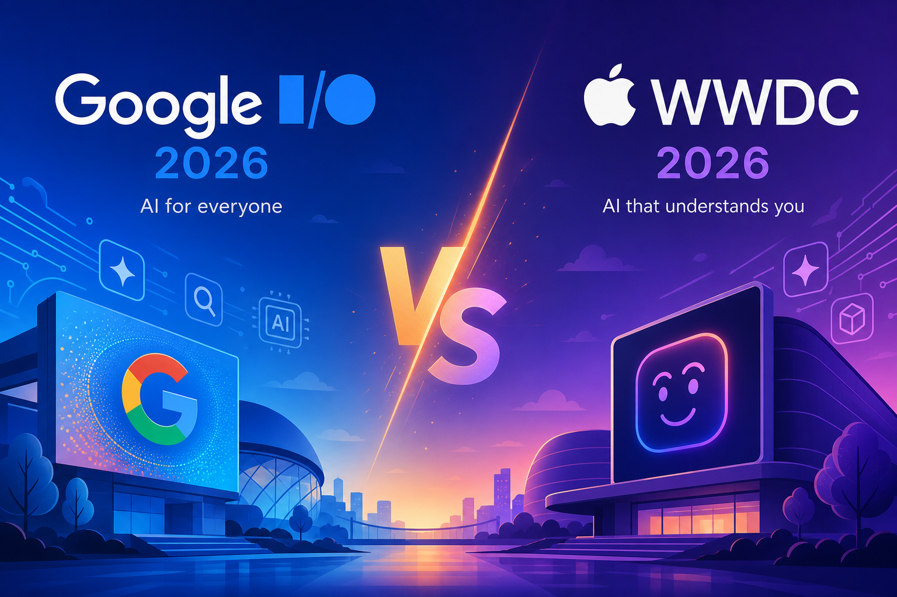
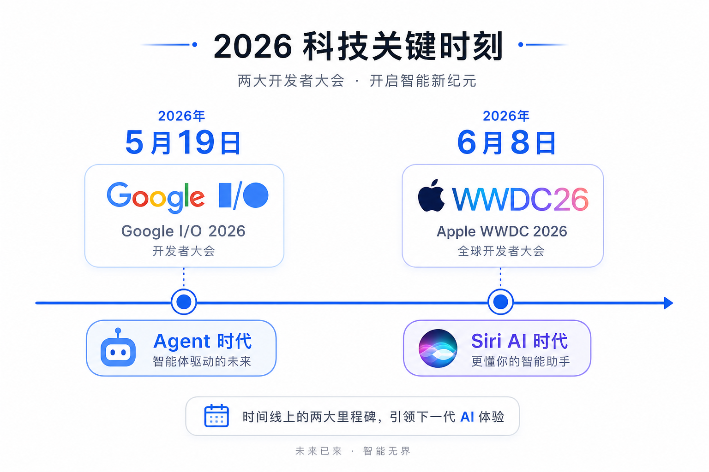
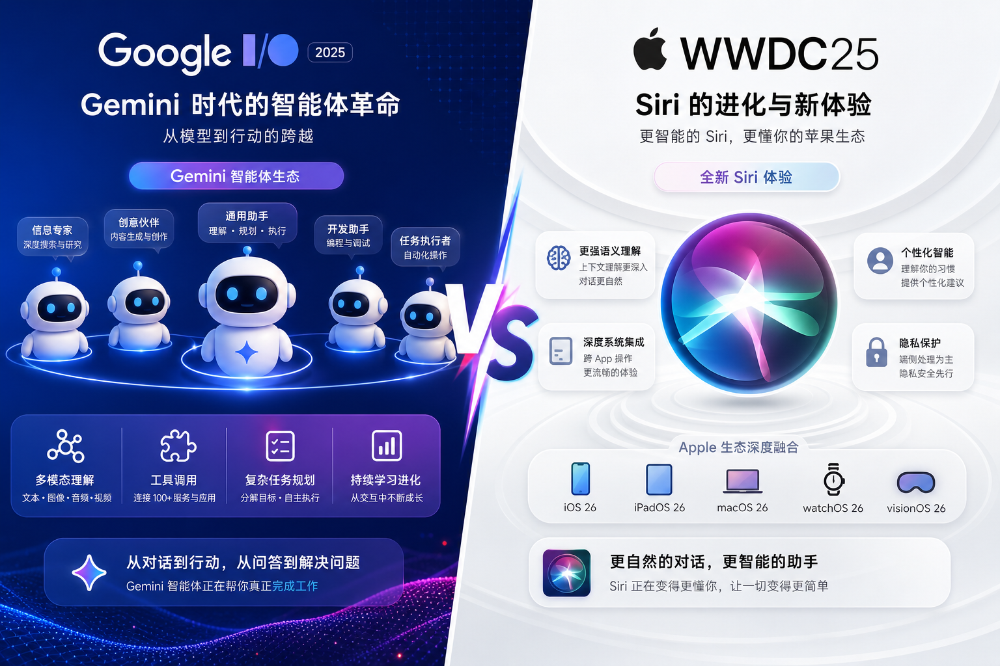
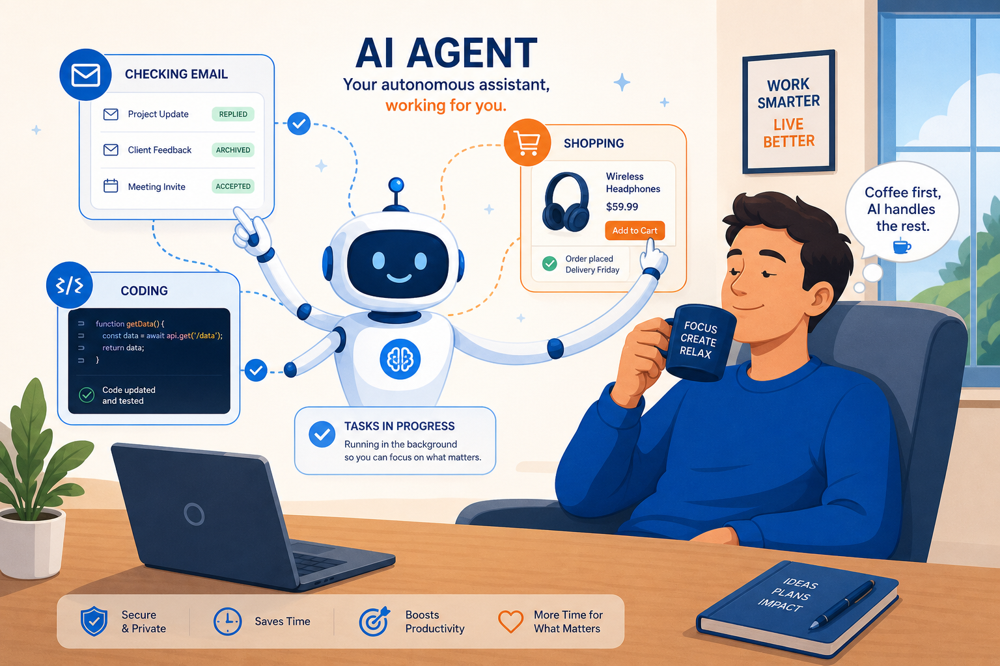
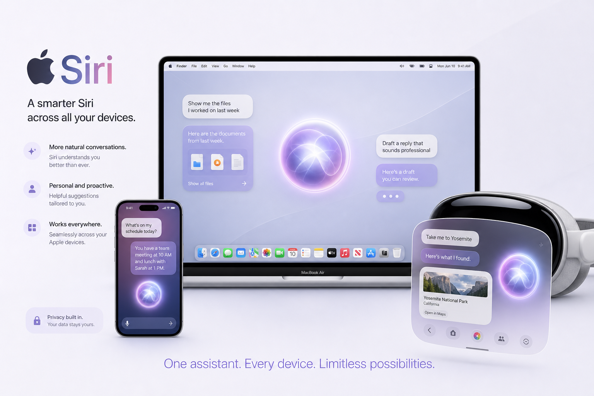
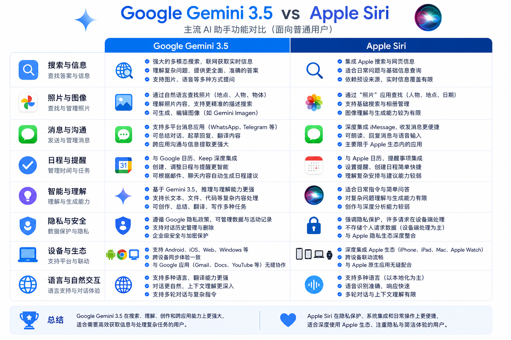

5月谷歌、6月苹果又更新了：AI 能自己跑腿，Siri 也大改版，跟我们有什么关系？
header.png

5 月谷歌开了 I/O，6 月苹果办了 WWDC。两场大会，核心都是 AI，但路线不一样。
你可能没看直播，但一定刷到过片段。问题是：这些发布跟你有什么关系？
一句话结论：两家都在把 AI 从「问答机」升级成「办事助手」——Google 走云端智能体，Apple 走设备内隐私。不用换手机，用法会变。
两集连续剧，一张时间线
overview-timeline.png

像两个风格迥异的管家：Google 派跑腿，Apple 派贴身秘书
scene1-duel-arena.png

你可以把这两场发布想象成两家高端酒店换了新管家。
Google 的新管家叫 Gemini 3.5，性格是「我先去跑，跑完再汇报」。它能在后台帮你盯新闻、比价、写代码、甚至自己搭一个小工具——官方叫 Information Agent（信息智能体）和 Gemini Spark（个人 AI 助手）。你下达任务，它 24 小时在云端转。
Apple 的新管家叫 Siri AI，性格是「我住在你手机里，知道你昨天跟谁聊了天」。它读你的短信、邮件、照片，跨 App 帮你办事，还能盯着屏幕内容回答问题。对话记录通过 iCloud 私密同步——官方强调隐私架构。
┌──────────────────────────────────────┐ │ 💡 核心区别，一句话 │ │ │ │ Google：云端智能体，能干更多活 │ │ Apple：设备内助手，更懂你的私人数据 │ └──────────────────────────────────────┘
最有意思的反转：据 TechCrunch 报道，新版 Siri 的部分能力底层用了 Google Gemini。苹果用户嘴里的「嘿 Siri」，背后可能是谷歌在撑腰——科技圈的联姻，比电视剧还精彩。
Google I/O 2026：智能体时代，具体发布了什么？
scene2-agent-era.png

Google 在 I/O 上说的核心转变，用官方原话讲就是：从「AI 帮你」变成「AI 替你跑流程」。
普通人能感知到的 6 个变化
📊 难度说明
⭐ = 打开 App 就能用
⭐⭐ = 需要订阅 Google AI Plus/Pro，部分功能限美国
开发者向的重磅（跟你间接相关）
Google 还发布了 Antigravity 2.0——一个「智能体优先」的开发平台。简单说：以后程序员可以让 AI 子智能体分别写前端、测 Bug、迁移代码，自己在旁边喝咖啡验收。
另外有个叫 WebMCP 的开放标准正在推进——网站可以把自己的按钮、表单「暴露」给浏览器里的 AI，让 AI 帮你填表、下单更靠谱。Chrome 149 已开始实验。
数据来源：Google Developers Blog · Google Keyword
WWDC 2026：Siri 终于「毕业」了
scene3-siri-ai.png

苹果等这场发布会，等了不止一年。
2024 年 WWDC 就预告了「更聪明的 Siri」，结果一拖再拖。Craig Federighi 在台上正式推出 Siri AI——苹果说这是「完全新版本的 Siri」，不是小修小补。
Siri AI 能做什么？
▶ 看屏幕回答问题——你正在看网页或照片，问 Siri「这地方怎么去」，它能读屏幕内容再回答
▶ 跨 App 搜个人数据——「帮我找上周小明发的那张发票」，它会翻短信、邮件、照片
▶ 独立 Siri App——像常见 AI 聊天 App 一样有对话历史，iCloud 私密同步
▶ Vision Pro 新交互——不用喊「嘿 Siri」，盯着悬浮光球就能开聊
▶ Messages 一键回复建议——根据聊天上下文，帮你拟回复
▶ Safari 网页监控——「这个商品补货了通知我」，Notify Me 功能
系统全家桶也升级了
家长党狂喜：Screen Time 大改版
苹果还花了大量篇幅讲儿童数字安全——Setup Assistant 帮家长选 App、Ask to Browse 管网页、Communication Safety 拦截暴力内容。如果你家有娃，这可能是 WWDC 里对你最实用的部分。
一张表看懂：你该站哪边？
scene4-comparison.png

┌──────────────────────────────────────┐ │ ⚠️ 注意：别急着换设备 │ │ │ │ 大部分功能今年秋天才正式推送 │ │ 现在只是开发者测试版 │ │ 且 Siri AI 初期仅支持英语 │ └──────────────────────────────────────┘
最有意思的 3 个细节（吃瓜版）
1. 库克最后一届 WWDC
Tim Cook 已宣布 9 月 1 日把 CEO 交给硬件负责人 John Ternus。这届 WWDC 是 Cook 任内最后一届——Siri AI 成了他的「AI legacy」。
2. 苹果用谷歌的脑
Siri AI 底层部分能力来自 Google Gemini。两家表面竞争，底下合作——跟当年 Google 地图嵌入 iPhone 有异曲同工之妙。
3. 欧盟用户又「特殊待遇」了
Siri AI 在欧盟的 iPhone 和 iPad 上暂时不可用（数字市场法合规问题），Mac 和 Vision Pro 反而能用。Google 的 Gemini 在欧洲倒是正常推进。
你现在就能做的 3 件事
不用等秋天，今天就能试：
① 用 AI 快速搞懂两场发布（⭐）
打开 豆包、Kimi 或 DeepSeek，直接粘贴问：
帮我对比 2026 年 5 月 Google I/O 和 6 月 Apple WWDC 的 AI 发布，
用表格列出：核心产品、目标用户、已上线功能、还没上线的功能。
要求：中文、简洁、每项不超过 20 字。有网络加速工具的话，也可以打开 Gemini App 问同样的问题。
② 让 AI 帮你写「发布会速览」（⭐）
你是一位科技博主，请用 800 字、口语化中文，
写一篇「Google I/O vs WWDC 2026」对比文章。
读者是不写代码的普通白领。
重点讲：对他们日常生活有什么变化。
不要堆砌术语，每段不超过 4 行。③ 关注秋季更新清单（⭐）
把下面清单存进备忘录，9 月前后对照着看：
- iOS 27 正式版 → Siri AI 好不好用
- Gemini Information Agent 是否开放
- Gemini 3.5 Pro 是否上线
- Universal Cart 是否扩到更多国家
- Android XR 智能眼镜实物怎么样
收个尾
记住 3 件事就够：
- Google 押注「智能体」：AI 从聊天伙伴变成能后台跑任务的助手，Gemini 3.5 Flash 已经能用
- Apple 押注「Siri AI」：拖了两年的大改版终于来了，跨 App 读数据是它的杀手锏
- 你不必站队：用 Google 服务的盯 Gemini，用 iPhone 的等 iOS 27，两家都在往「AI 帮你办事」走
AI 大战的下一章，不在发布会上，在你每天开手机的那几秒钟里。